INTRODUCTION TO PROGRAMMING
Have you heard about the word programming?
Well, let’s discuss
this first.

Programming is giving specific instructions to perform a task. The instructions together are called a program. You can make computers perform interesting tasks using programming. You can create games, websites, and mobile apps using programming.
INTRODUCTION TO SCRATCH
We will be using Scratch to learn programming and create games.
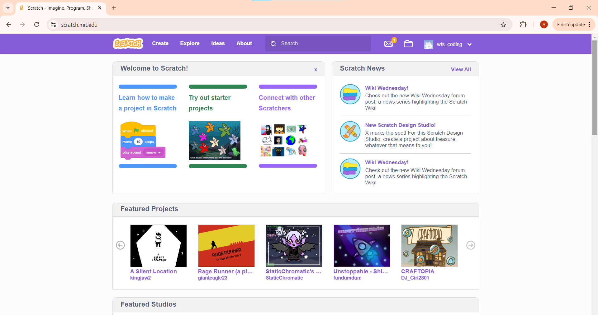-
Where are the code blocks?
On the left, you will find all the blocks we will use. You can also see the categories of different blocks like looks, motion, sound, etc. We will learn about them in a while. 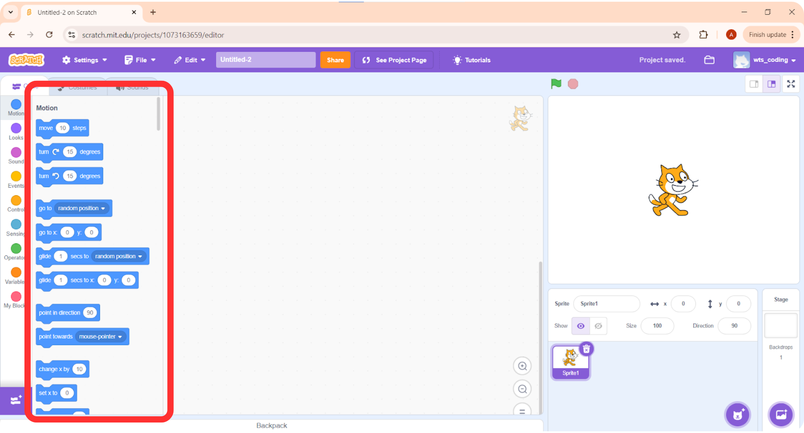 -
Code Area:
In the middle, you will be writing your program. You can drag and drop blocks and join them together to create a set of instructions. It’s very similar to LEGOS but for coding! 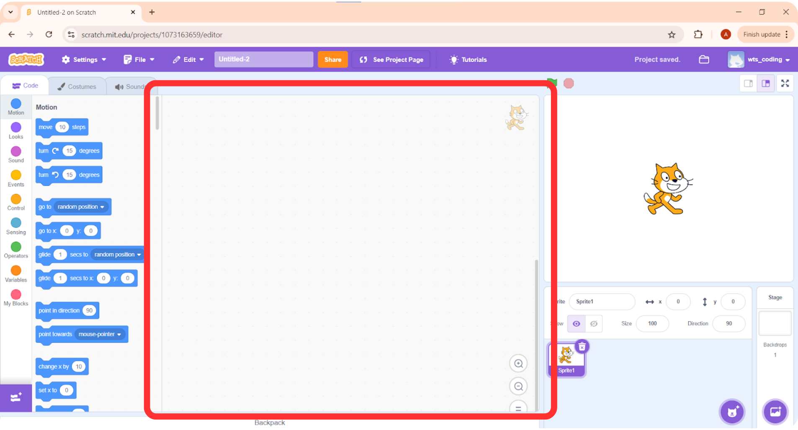 -
Where do I see the output?
This is the stage area where you see the output. 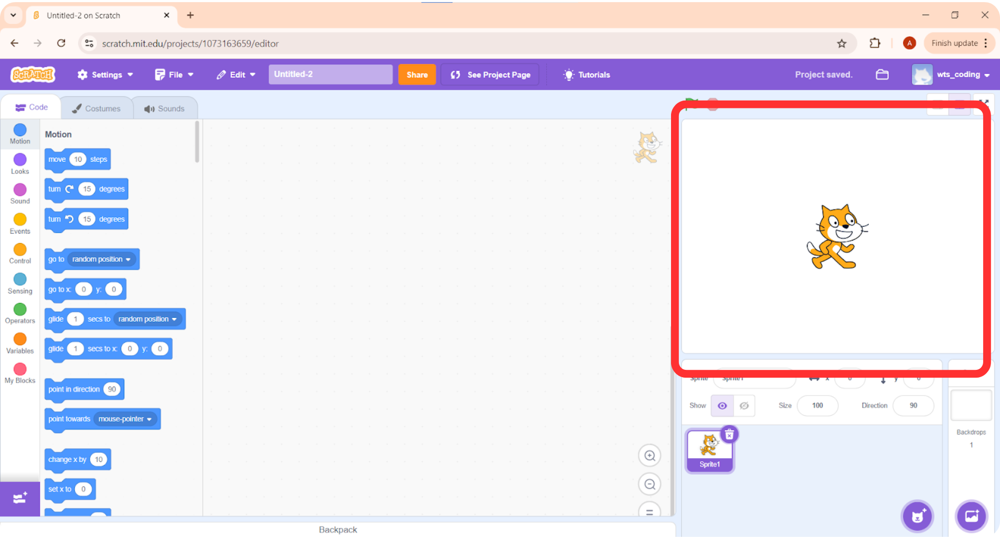 -
Start Code Execution:
TYou can click on the green flag to check the program's output. When you have written some instructions and want the computer to follow them and show you results you click on the green flag.
-
Stop Code Execution:
Click on the red icon to stop the program. 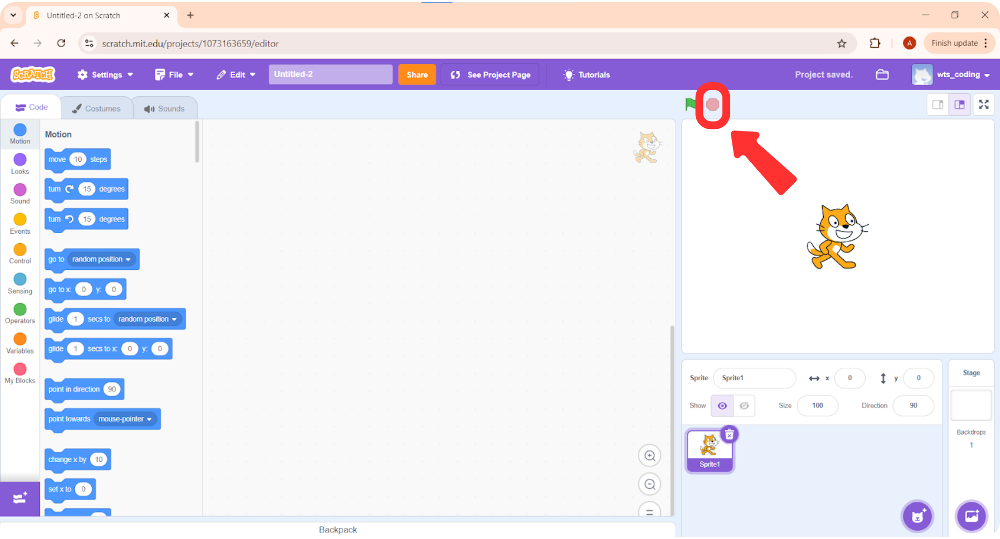 -
Find My Sprite:
In the bottom right you can see the sprites. Sprite is like a character in your game or story. 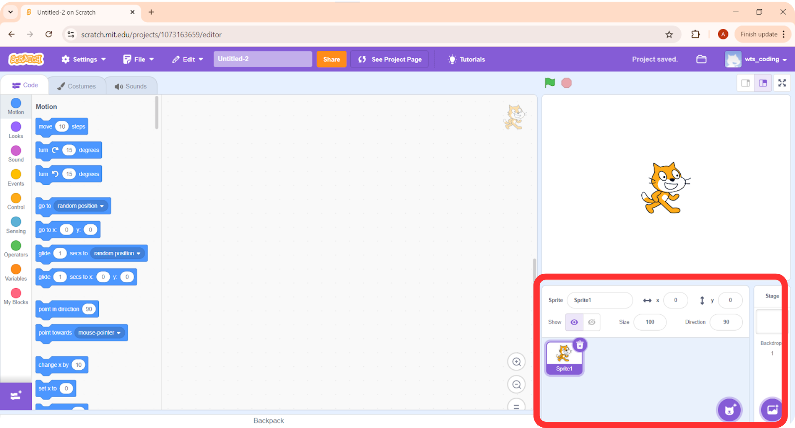 -
Select A Different Sprite:
You can select different sprites by clicking on the icon at the bottom.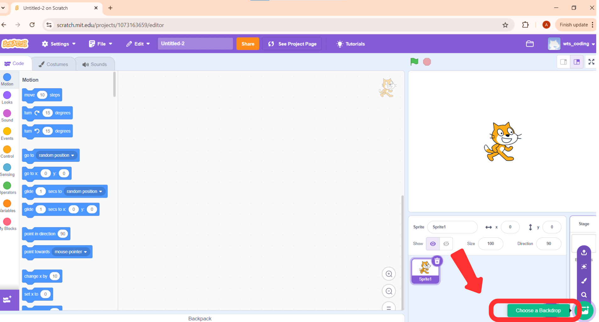 -
Choose a backdrop:
You can select different backdrops by clicking on the icon next to it.We will learn more about it in the coming classes.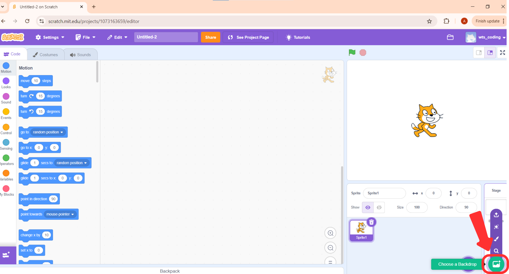
CHARACTER MOVEMENT USING ARROW KEYS
You can see different categories for the blocks. At the top, you can see motion. By using the blocks in this category, you can move your sprites. Let’s try moving it in different directions. 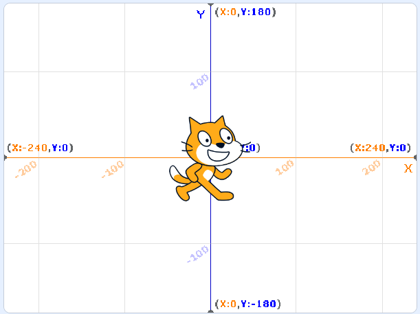
Move Left and Right:
If you want the sprite to move left/right you need to change x
Move Up and Down:
If you want the sprite to moveand y if you want it to move up/down,
you need to change y. x,y coordinates are used to denote the
position of the sprite.
Let’s try to move the sprite to the right.
Here we are trying to move the sprite 100 units to the right.👇
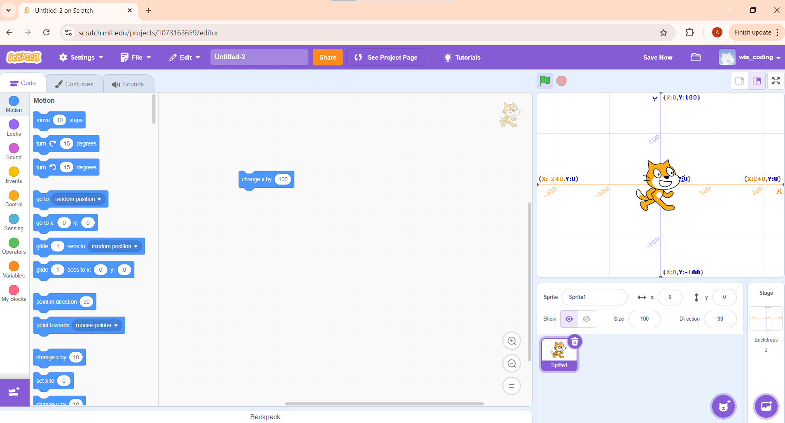
But when I click on the flag icon nothing happens do you know why?🤔
Because the computer does not know when it is supposed to move the
sprite.
I can tell the computer to move the sprite to the right when I press
the right arrow key on my keyboard.
To do that, I can go to the
events section and select
“when key pressed block”.
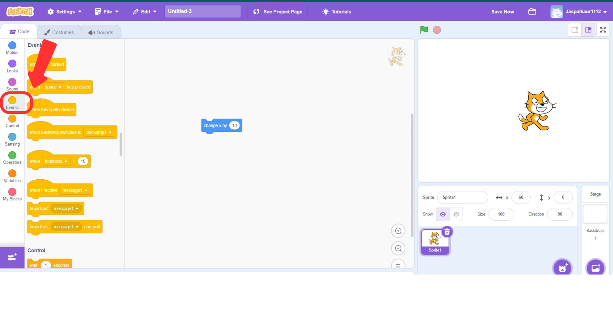
We can select “right arrow” from
the drop-down menu so that the position changes only when you press
the right arrow key.
We can Connect the “change x”
and “when key pressed block”
since we want to change position when the key is pressed.
Let’s check the output.
We can press the green flag to see
the output.
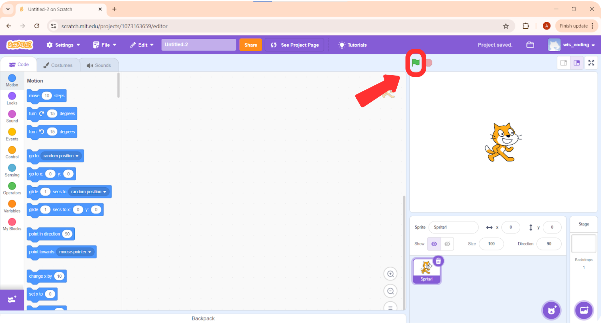
How can we make it go left by 100 units? 🤔
We will again take the “when key pressed block”, choose “left arrow” from the
dropdown, and attach the “change x by” block to it.
We can again use
change x by block but since we
want the sprite to move in the left direction, we need to give a “-”
sign before the number.
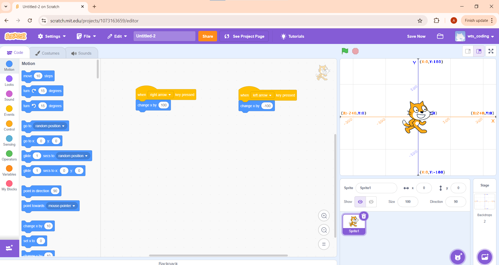
Let’s try to move the sprite up and down!
To move the sprite up and down we will need the “change y by” block.
Let’s try moving the sprite up by 100 units.
To move the sprite down you need to give a “-” sign before the number.
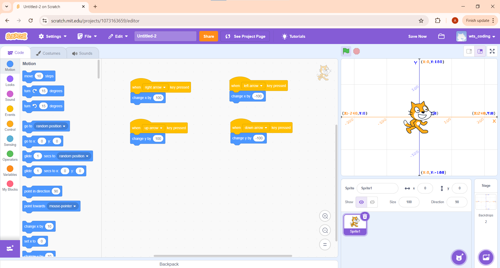